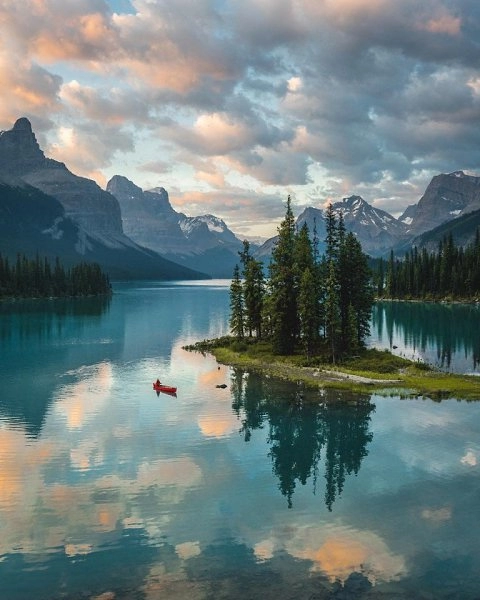

WebP — это формат файлов изображений, разработанный Google и предназначенный для замены форматов файлов JPEG, PNG и GIF. Он поддерживает как сжатие с потерями, так и без потерь, а также анимацию и альфа-прозрачность.
В настоящее время просмотр изображений в формате WebP поддерживают все браузеры семейства
Chromium
(Google Chrome, Microsoft EDGE и другие), а также Opera, Firefox (и основанные на нём Pale Moon и Waterfox), Safari,
GNOME Web,
Midori
и Falkon.
WebP также может отображаться во всех основных браузерах с использованием библиотеки JavaScript WebPJS, хотя поддержка в Internet Explorer 6 и выше достигается с помощью Flash.
Есть также плагин для работы с WebP в Adobe Photoshop.
Преимущества:
Сравним PNG, JPEG и WebP при качестве в 100%.
| PNG | JPEG | WebP |
|---|---|---|
| 230 кб | 115 кб | 135 кб |
| 226 кб | 126 кб | 87,6 кб |
|  | ||
| 445 кб | 176 кб | 123 кб |
Как видно из таблицы, WebP неплохо справляется со своей задачей: алгоритм сжатия работает довольно эффективно.
Однако давайте посмотрим, что получится при уменьшении качества. PNG в этом случае оказывается бесполезным, т к
размер файла в любом случае будет больше, чем у других форматов. Посему есть смысл сравнивать только WebP и JPEG.
| WebP качество 20% | JPEG качество 20% |
|---|---|
| 11,5 кб | 10,3 кб |
| 8,68 кб | 9,44 кб |
|
|
| 14,2 кб | 13,8 кб |
Мы видим, что при ухудшении качества изображения безоговорочную победу одерживает WebP. Из-за того, что алгоритм сжатия в JPEG работает с градиентами,
изображение становится менее чётким, появляются нежелательные ореолы (яркий пример - вторая картинка), мелкие объекты как, например, лодка с человеком на третьем изображении в формате JPEG
жутко размывается.
К слову, сравниваемые файлы в последнем случае имеют +/- одинаковый размер.
В изображениях с большим разрешением может оказаться так, что файл изображения в WebP будет занимать гораздо больше пространства, нежели в иных форматах.
WebP - отличная альтернатива JPEG и PNG, т к изображения в среднем занимают до 64% веб-страницы.
В общем и целом формат показал себя в хорошем ключе, т к для при сохранившемся качестве изображения
файл изображения будет занимать пространство на носителе в гораздо меньшем объёме, что свидетельствует
об эффективной работе алгоритма сжатия. Однако я не стал бы преобразовывать изображения с большим разрешением
в данный формат, т к без потерь в качестве может увеличиться объём файла, но это скорее исключение из правил.
При одинаковом размере файла изображение в WebP зачастую выигрывает в качестве - нет проблем с замыливанием, засвечиванием изображения, как в случае с JPEG.
Со временем, я думаю, этот формат преобретёт гораздо большее распространение, т к его поддержка всё стремительнее включается в различные программные продукты
(будь это браузер или image viewer).